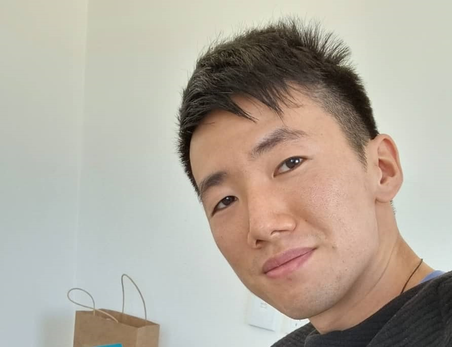

Simon Jiang Online Resume

Objective Statement
As one of five co-founders of startup game company Clockwork Giants,
I have gained a plethora of experience working with people and in different roles.
This flexibility led me to create and release Lareissa Everbright on Steam as the
sole developer while still working on Clockwork Giant’s Introspect. Though I am
used to a multi-faceted workload and wearing many hats, at my core I am a
qualified programmer with professional experience working in C++ and C#. I
have a thirst for learning new skills and wish to enter a role where I can
further grow as a developer and apply my learnt abilities to exciting projects.
Education
Media Design School - Bachelor of Software Engineering
Auckland City, Auckland - Game Programming
Mount Albert Grammar School - National Certificate of Educational Achievement
Mount Albert, Auckland - NCEA Level 3
Work Experience
Casual Sales Assistant at Alquemie (Lego Certified)
Timeframe: June 2022 - Present
Job Details
- Responsibilities include transactions, restocking, stock deliveries,
customer service and cleaning.
Production Manager at Clockwork Giants
Timeframe: March 2017 - April 2023
Job Details
-
Fulfil several roles such as programmer, marketing director,
CFO and designer.
-
Worked on Introspect project in Unreal Engine 4.
Duty Manager at Hell Pizza
Timeframe: May 2015 - June 2022
Job Details
-
Required to understand and confidently execute all aspects
of business, which includes managing staff, food preparation,
customer service, deliveries, stock ordering, cleaning, etc.
Skills
Programming
-
3+ years of professional experience with C++ and C# in Unreal Engine 4 and Unity.
-
Well versed in various programming roles such as gameplay, AI and UI.
-
Strict advocator for clean, readable code and commenting practices.
-
Graduated from Media Design School with a game programming tailored Bachelor of
Software Engineering degree with an A- GPA.
Teamwork and Communication
-
Understand the importance of well-maintained communication, especially during
periods of heightened workload, with peers to lessen the possibility of errors
and to keep everyone on the same page.
-
Having effectively worked in multiple roles in the same job, a keen ability to
empathise with and communicate to various types of team members has been developed.
-
Conducted one-on-one meetings with members of staff as a production manager.
Goal-Oriented Work Ethic
-
Experienced with waterfall and agile development methodologies, primarily using
Scrum and kanban boards when on an agile framework.
-
Highly motivated by having sets of tasks to complete and deadlines to meet.
Other Tidbits
Contact Me